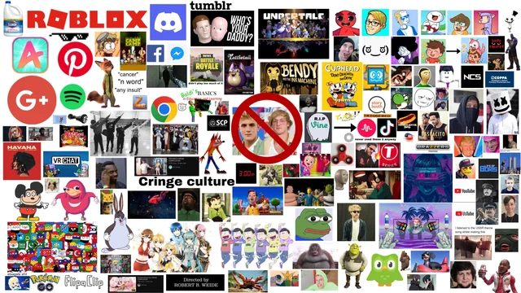

- Inteligența artificială (AI) – Sisteme precum ChatGPT, Claude sau Gemini pot purta conversații, scrie cod, traduce texte și genera imagini. AI-ul este folosit în medicină, transporturi, industrie și educație, schimbând rapid modul în care lucrăm.
- Smartphone-urile moderne – Telefoanele actuale au mai multă putere de calcul decât calculatoarele care au dus oamenii pe Lună. Sunt principalul mijloc de acces la internet, comunicare, plată, divertisment și muncă pentru miliarde de oameni.
- Cloud computing – Servicii ca Google Drive, iCloud sau AWS permit stocarea și accesarea datelor de oriunde. Aplicațiile rulează pe servere puternice din centre de date, nu pe dispozitivul personal.
- Mașinile electrice și autonome – Tesla, BYD și alți producători au transformat piața auto. Mașinile electrice reduc dependența de petrol, iar tehnologia de conducere autonomă (self-driving) avansează de la an la an.
- Energia regenerabilă – Panourile solare și turbinele eoliene au devenit mult mai eficiente și mai ieftine. Multe țări își propun să renunțe la combustibili fosili în favoarea surselor curate de energie.
- Realitate virtuală și augmentată – Dispozitive precum Meta Quest sau Apple Vision Pro permit imersiunea în lumi virtuale sau suprapunerea informațiilor digitale peste lumea reală. Sunt folosite în jocuri, educație, medicină și industrie.
- Streaming și conținut digital – Netflix, YouTube, Spotify și TikTok au înlocuit treptat televizorul, radioul și CD-urile. Conținutul este disponibil oricând, oriunde, pe orice dispozitiv.
- Explorare spațială privată – SpaceX (Elon Musk) și Blue Origin (Jeff Bezos) au transformat spațiul dintr-un domeniu strict guvernamental într-o piață comercială. Rachetele reutilizabile au redus drastic costurile lansărilor.
- Provocările tehnologiei – Pe lângă beneficii, apar și riscuri: dependența de ecrane, dezinformarea online, atacurile cibernetice, problemele de confidențialitate și impactul AI asupra locurilor de muncă. Tehnologia rămâne un instrument – depinde de noi cum o folosim.
